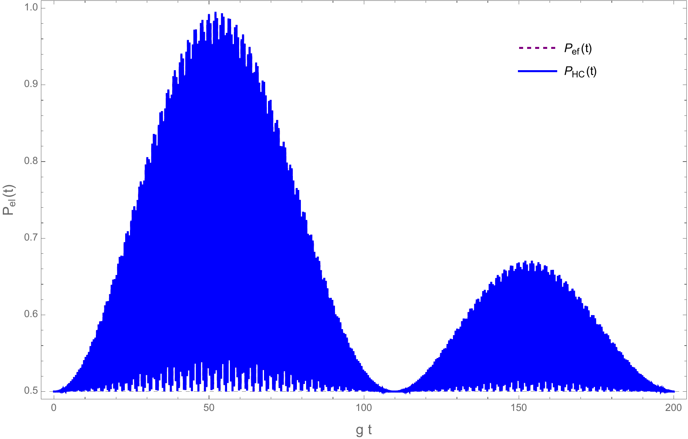

Generación de estados entrelazados
1. Protocolo de entrelazamiento
Se considera primero un estado coherente fonónico dentro de un bloque polaritónico fijo. La pureza electrónica para la bipartición electrón frente a fotón-fonón comienza en $P_{\mathrm{el}}=1/2$, correspondiente a entrelazamiento máximo para esta bipartición, y posteriormente alcanza $P_{\mathrm{el}}=1$. En ese instante el electrón se separa del subsistema fotón-fonón. La idea del protocolo es localizar dicho estado separable, pues la evolución posterior vuelve a conducirlo hacia estados entrelazados.

El estado evolucionado dentro de un bloque $n$ fijo es
$$\begin{aligned} \ket{\tilde\Psi_n(t)}={}&p_{n0}^{-}(t)\ket{-,n,0}\\ &+\sum_{m=1}^{\infty}\left[ p_{nm}^{+}(t)\ket{+,n,m-1} +p_{nm}^{-}(t)\ket{-,n,m}\right]. \end{aligned}$$Usando
$$\ket{\pm,n}=\frac{1}{\sqrt2} \left(\ket{e,n-1}\pm\ket{g,n}\right),$$y reagrupando las ramas electrónicas se obtiene
$$\ket{\tilde\Psi_n(t)} =\ket{\chi_e(t)}\ket e+\ket{\chi_g(t)}\ket g,$$ $$\ket{\chi_e(t)} =\frac{\ket{n-1}}{\sqrt2} \sum_{k=0}^{\infty} \left[p_{n,k+1}^{+}(t)+p_{nk}^{-}(t)\right]\ket k,$$ $$\ket{\chi_g(t)} =\frac{\ket n}{\sqrt2} \sum_{k=0}^{\infty} \left[p_{n,k+1}^{+}(t)-p_{nk}^{-}(t)\right]\ket k.$$Separando la cavidad de la vibración,
$$\ket{\tilde\Psi_n(t)} =\ket e\ket{n-1}\ket{\phi_e(t)} +\ket g\ket n\ket{\phi_g(t)},$$Las ramas contienen los estados fotónicos ortogonales $\ket{n-1}$ y $\ket n$. La coherencia electrónica se anula y la matriz reducida es diagonal:
$$\hat\rho_{\mathrm{el}}(t) =P_e(t)\ket e\bra e+P_g(t)\ket g\bra g,$$ $$P_e=\braket{\phi_e|\phi_e},\qquad P_g=\braket{\phi_g|\phi_g},\qquad P_e+P_g=1.$$Con $W(t)=P_e(t)-P_g(t)$ se tiene
$$P_e(t)=\frac{1+W(t)}2,\qquad P_g(t)=\frac{1-W(t)}2,$$La separabilidad en $t_*$ requiere
$$P_{\mathrm{el}}(t_*)=1 \quad\Longrightarrow\quad |W(t_*)|=1.$$Como $P_e+P_g=1$, esto solo puede suceder si
$$(P_e,P_g)=(1,0)\qquad\text{o}\qquad(P_e,P_g)=(0,1).$$Para $W(t_*)=1$, $\ket{\phi_g(t_*)}=0$ y
Para $W(t_*)=-1$, $\ket{\phi_e(t_*)}=0$ y
Los dos resultados son estados producto de los tres subsistemas. Para alcanzar la rama excitada se exige
$$\ket{\phi_g(t_*)}=\frac1{\sqrt2} \sum_{k=0}^{\infty} \left[p_{n,k+1}^{+}(t_*)-p_{nk}^{-}(t_*)\right]\ket k=0.$$La independencia de los estados de Fock implica, término por término,
$$p_{n,k+1}^{+}(t_*)=p_{nk}^{-}(t_*),$$ $$\ket{\phi_e(t_*)}=\sqrt2\sum_{k=0}^{\infty}p_{nk}^{-}(t_*)\ket k.$$Para la rama base se obtiene de forma análoga
$$\ket{\phi_g(t_*)}=-\sqrt2 \sum_{k=0}^{\infty}p_{nk}^{-}(t_*)\ket k.$$La inversión determina cuál de estos estados producto se alcanza para una preparación inicial dada. En resonancia, $\delta_n=0$, la inversión para un estado coherente fonónico dentro de un bloque polaritónico es
2. Estado separable inicial para generar un GHZ
Los estados GHZ obtenidos al evolucionar dentro de un solo doblete parten de un polaritón, que ya está entrelazado en los grados electrónico y fotónico. Para generar un GHZ a partir de un estado completamente separable hace falta salir del doblete aislado. Se propone
Definiendo
$$a=\cos\theta,\qquad b=e^{i\phi}\sin\theta,$$y usando $\ket{e,n-1}=(\ket{+,n}+\ket{-,n})/\sqrt2$,
$$\begin{aligned} \ket{\tilde\Psi(0)} &=\frac1{\sqrt2}(\ket{+,n}+\ket{-,n}) \otimes(a\ket m+b\ket{m+1})\\ &=\frac1{\sqrt2}\left[ a\ket{+,n,m}+a\ket{-,n,m} +b\ket{+,n,m+1}+b\ket{-,n,m+1}\right]. \end{aligned}$$El hamiltoniano efectivo acopla $\ket{+,n,r-1}\leftrightarrow\ket{-,n,r}$. Por tanto, el estado inicial vive en tres dobletes:
La participación simultánea de estos tres sectores permite que un estado producto inicial desarrolle correlaciones tripartitas.
3. Evolución resonante en los tres dobletes
En resonancia, $\delta_n=0$ y $\Omega_{nr}^{\mathrm{ef}}=\kappa_r$,
Aquí, $\hat\sigma_x$ es el operador de intercambio restringido al doblete $\{\ket{+,n,r-1},\ket{-,n,r}\}$:
$$\hat\sigma_x =\ket{+,n,r-1}\bra{-,n,r} +\ket{-,n,r}\bra{+,n,r-1}.$$Sea
$$C_r=\cos\left(\frac{\kappa_rt}{2}\right),\qquad S_r=\sin\left(\frac{\kappa_rt}{2}\right).$$Las evoluciones elementales son
$$\ket{+,n,r-1}\longrightarrow e^{-iA_{nr}t} \left[C_r\ket{+,n,r-1}+iS_r\ket{-,n,r}\right],$$ $$\ket{-,n,r}\longrightarrow e^{-iA_{nr}t} \left[C_r\ket{-,n,r}+iS_r\ket{+,n,r-1}\right].$$Aplicándolas a los cuatro términos iniciales:
$$\ket{+,n,m}\longrightarrow e^{-iA_{n,m+1}t} \left[C_{m+1}\ket{+,n,m}+iS_{m+1}\ket{-,n,m+1}\right],$$ $$\ket{-,n,m}\longrightarrow e^{-iA_{nm}t} \left[C_m\ket{-,n,m}+iS_m\ket{+,n,m-1}\right],$$ $$\ket{+,n,m+1}\longrightarrow e^{-iA_{n,m+2}t} \left[C_{m+2}\ket{+,n,m+1}+iS_{m+2}\ket{-,n,m+2}\right],$$ $$\ket{-,n,m+1}\longrightarrow e^{-iA_{n,m+1}t} \left[C_{m+1}\ket{-,n,m+1}+iS_{m+1}\ket{+,n,m}\right].$$La evolución completa es
$$\begin{aligned} \ket{\tilde\Psi(t)}=\frac1{\sqrt2}\Big\{& ae^{-iA_{n,m+1}t}[C_{m+1}\ket{+,n,m}+iS_{m+1}\ket{-,n,m+1}]\\ &+ae^{-iA_{nm}t}[C_m\ket{-,n,m}+iS_m\ket{+,n,m-1}]\\ &+be^{-iA_{n,m+2}t}[C_{m+2}\ket{+,n,m+1}+iS_{m+2}\ket{-,n,m+2}]\\ &+be^{-iA_{n,m+1}t}[C_{m+1}\ket{-,n,m+1}+iS_{m+1}\ket{+,n,m}]\Big\}. \end{aligned}$$Al factorizar las ramas polaritónicas,
La energía común cumple
$$A_{nr}=n\Omega+\frac{\nu\lambda^2}{4} +\nu\left(r-\frac12\right)=A_n^{(0)}+\nu r,$$ $$A_n^{(0)}=n\Omega+\frac{\nu\lambda^2}{4}-\frac\nu2,$$ $$e^{-iA_{nr}t}=e^{-iA_n^{(0)}t}e^{-ir\nu t}.$$El primer factor es una fase global. Al descartarlo y definir $\tau=\nu t$, los estados vibracionales quedan
4. Condiciones para obtener un estado GHZ
Al volver a la base opto-electrónica,
$$\ket{\pm,n}=\frac{\ket e\ket{n-1}\pm\ket g\ket n}{\sqrt2},$$ $$\begin{aligned} \ket{\tilde\Psi(t)}={}& \ket e\ket{n-1}\frac{\ket{\Phi_+}+\ket{\Phi_-}}{\sqrt2} +\ket g\ket n\frac{\ket{\Phi_+}-\ket{\Phi_-}}{\sqrt2}. \end{aligned}$$Definiendo
$$\ket{\chi_e}=\frac{\ket{\Phi_+}+\ket{\Phi_-}}{\sqrt2},\qquad \ket{\chi_g}=\frac{\ket{\Phi_+}-\ket{\Phi_-}}{\sqrt2},$$se obtiene
$$\ket{\tilde\Psi(t)} =\ket e\ket{n-1}\ket{\chi_e(t)} +\ket g\ket n\ket{\chi_g(t)}.$$Un GHZ máximo requiere ramas con el mismo peso y estados vibracionales ortogonales:
$$\|\chi_e(t_*)\|^2=\|\chi_g(t_*)\|^2=\frac12, \qquad\braket{\chi_g(t_*)|\chi_e(t_*)}=0.$$Las normas satisfacen
$$\begin{aligned} \braket{\chi_e|\chi_e} &=\frac12[\braket{\Phi_+|\Phi_+}+\braket{\Phi_+|\Phi_-} +\braket{\Phi_-|\Phi_+}+\braket{\Phi_-|\Phi_-}]\\ &=\frac12+\operatorname{Re}\braket{\Phi_+|\Phi_-}, \end{aligned}$$ $$\braket{\chi_g|\chi_g} =\frac12-\operatorname{Re}\braket{\Phi_+|\Phi_-}.$$La ortogonalidad da
$$\begin{aligned} \braket{\chi_g|\chi_e} &=\frac12(\braket{\Phi_+|\Phi_+}-\braket{\Phi_-|\Phi_-}) -i\operatorname{Im}\braket{\Phi_+|\Phi_-}=0. \end{aligned}$$Como $\braket{\Phi_+|\Phi_+}+\braket{\Phi_-|\Phi_-}=1$, todas las condiciones se reúnen en
5. Primera condición: igualdad de normas
La diferencia de las normas es
$$\begin{aligned} \|\Phi_+\|^2-\|\Phi_-\|^2=\frac12\Big[& |a|^2S_m^2+(aC_{m+1}-ib^*S_{m+1})(aC_{m+1}+ibS_{m+1}) +|b|^2C_{m+2}^2\\ &-|a|^2C_m^2-(-iaS_{m+1}+b^*C_{m+1})(iaS_{m+1}+bC_{m+1}) -|b|^2S_{m+2}^2\Big]. \end{aligned}$$Los productos centrales se desarrollan paso por paso:
$$\begin{aligned} &(aC_{m+1}-ib^*S_{m+1})(aC_{m+1}+ibS_{m+1})\\ &\qquad=a^2C_{m+1}^2+|b|^2S_{m+1}^2 -2a\operatorname{Im}(b)C_{m+1}S_{m+1}, \end{aligned}$$ $$\begin{aligned} &(-iaS_{m+1}+b^*C_{m+1})(iaS_{m+1}+bC_{m+1})\\ &\qquad=a^2S_{m+1}^2+|b|^2C_{m+1}^2 +2a\operatorname{Im}(b)C_{m+1}S_{m+1}. \end{aligned}$$Al sustituirlos,
$$\begin{aligned} \|\Phi_+\|^2-\|\Phi_-\|^2=\frac12\Big[& a^2(S_m^2-C_m^2)+(a^2-|b|^2)(C_{m+1}^2-S_{m+1}^2)\\ &+|b|^2(C_{m+2}^2-S_{m+2}^2) -4a\operatorname{Im}(b)C_{m+1}S_{m+1}\Big]. \end{aligned}$$Con $a=\cos\theta$, $|b|^2=\sin^2\theta$ y $\operatorname{Im}(b)=\sin\phi\sin\theta$:
$$\begin{aligned} \|\Phi_+\|^2-\|\Phi_-\|^2=\frac12\Big[& \cos^2\theta(S_m^2-C_m^2) +\cos(2\theta)(C_{m+1}^2-S_{m+1}^2)\\ &+\sin^2\theta(C_{m+2}^2-S_{m+2}^2) -4\cos\theta\sin\theta\sin\phi\,C_{m+1}S_{m+1}\Big]. \end{aligned}$$Definiendo
$$x_r=\frac{\lambda\sqrt r\,\tau}{2},\qquad C_r=\cos x_r,\qquad S_r=\sin x_r,$$y usando $\cos^2x-\sin^2x=\cos(2x)$ y $2\sin x\cos x=\sin(2x)$, resulta
6. Segunda condición: ortogonalidad
Solo $\ket m$ y $\ket{m+1}$ aparecen simultáneamente en $\ket{\Phi_+}$ y $\ket{\Phi_-}$. Por tanto,
$$\begin{aligned} \braket{\Phi_+|\Phi_-} =\frac12\Big[&ae^{-im\tau}C_m e^{i(m+1)\tau} (aC_{m+1}-ib^*S_{m+1})\\ &+b^*e^{i(m+2)\tau}C_{m+2}e^{-i(m+1)\tau} (iaS_{m+1}+bC_{m+1})\Big]\\ =\frac{e^{i\tau}}2\Big[&C_{m+1}(a^2C_m+|b|^2C_{m+2}) +iab^*S_{m+1}(-C_m+C_{m+2})\Big]. \end{aligned}$$Sustituyendo $a=\cos\theta$, $b=e^{i\phi}\sin\theta$ y $ie^{-i\phi}=\sin\phi+i\cos\phi$, las partes real e imaginaria deben anularse por separado:
$$\begin{aligned} C_{m+1}[\cos^2\theta C_m+\sin^2\theta C_{m+2}] +\frac12\sin(2\theta)\sin\phi\,S_{m+1}(C_{m+2}-C_m)=0, \end{aligned}$$ $$\frac12\sin(2\theta)\cos\phi\,S_{m+1}(-C_m+C_{m+2})=0.$$Se elige $\phi=\pi/2$. La segunda ecuación se anula y queda
$$C_{m+1}[\cos^2\theta C_m+\sin^2\theta C_{m+2}] -\frac12\sin(2\theta)S_{m+1}(C_m-C_{m+2})=0.$$Sustituyendo $C_r$ y $S_r$:
7. Solución simultánea y protocolo final
Para $\phi=\pi/2$ deben resolverse simultáneamente
La búsqueda numérica del manuscrito produce
La preparación vibracional separable es, por tanto,
Al evolucionar resonantemente durante $t_*=\tau_*/\nu$, las ramas electrónico-fotónicas adquieren la misma probabilidad y los estados vibracionales que las acompañan se vuelven ortogonales:
$$\ket{\tilde\Psi(t_*)} =\ket e\ket{n-1}\ket{\chi_e(t_*)} +\ket g\ket n\ket{\chi_g(t_*)},$$ $$\|\chi_e(t_*)\|^2=\|\chi_g(t_*)\|^2=\frac12, \qquad\braket{\chi_g(t_*)|\chi_e(t_*)}=0.$$Estas son las condiciones de un estado GHZ tripartito, salvo fases y elecciones locales de la base lógica. El protocolo genera así entrelazamiento genuinamente tripartito a partir de una preparación inicial completamente separable.